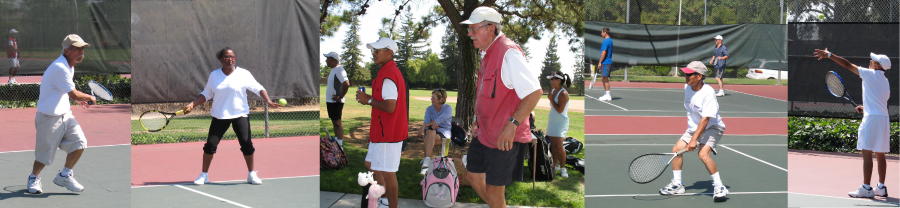
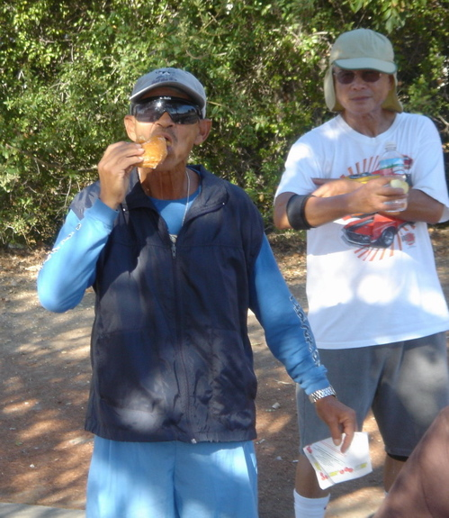
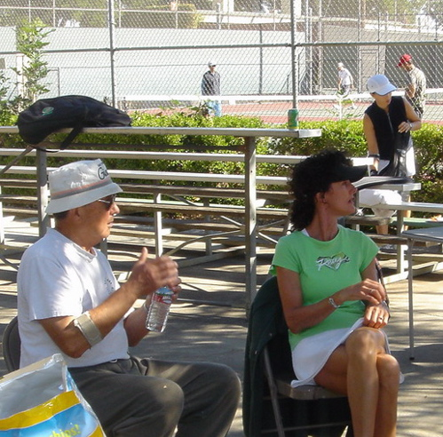
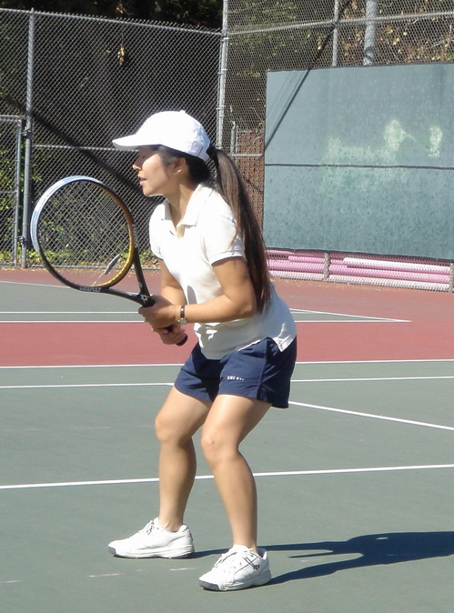
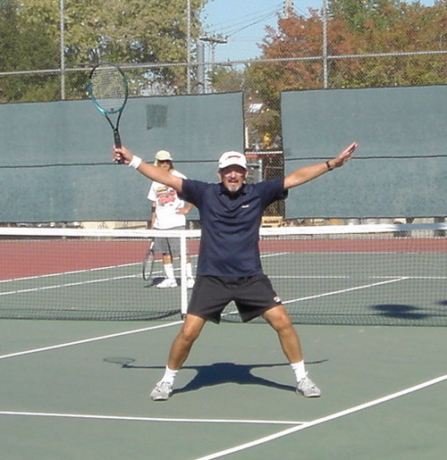
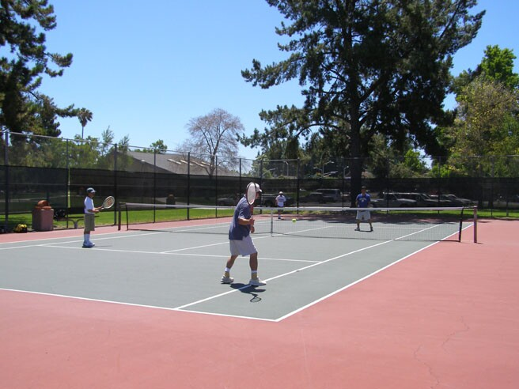
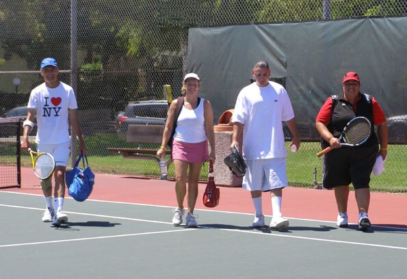

|  |
Santa Clara Tennis Club |
| USTA Norcal | Lifetime Tennis | City of Santa Clara | Tennis Warehouse | Find a Tennis Court | Find a Teaching Pro |
| Membership Mixers Board Meetings Events Clinics Home |
PAST MIXERS (click on each date)October 17, 2015We had a good turnout for the last mixer of the the year. Winners were Andy Charfauros. September 26, 2015We had a small turnout of 10 participants in the mixer due to the resurfacing of the parking lot - winners were Jim Manning and Trang Nguyen May 30, 2015A total of 19 participants battled for the winners prize, and fun was had by all. The winners were Larry Rinek and Heidi Azama. April 18, 2015We had 12 players taking part in our April Mixer. It was a good turnout considering parking was limited due to a Swim Meet. The winners were Volga Cavello and Mitch Carillo. March 21, 2015We had a nice turnout of 16 participants for the first Mixer of 2015. Weather was fine for tennis and a good time was had by all. The winners were Lisa Halpern and Roy Morishige. The club received three membership renewals, two Santa Clara residents and the other from Sunnyvale. Many thanks to board members Hondo for hosting and Lucy for delivering the fruits, and other goodies. August 23, 2014We had 11 players show up for the August Mixer. The weather was fine and a good time was had by all. The winners were Lloyd Ngo and Janet Arsenault. July 26, 2014 ( Bob Hughes Memorial Pig-Out)An total of 34 people attended the pigout. The weather was fine, not as hot as the forecast. The tennis was most enjoyable. And lunch from Armadillo Willy's was delicious. Thanks to Jeanette for ordering and picking up the food. To end the festivities, each person was given a gift, compliments of Santa Clara Tennis Club. June 28, 2014We had 13 players show up for the June Mixer. The beginning of summer vacatioin could have contributed to the low turnout. The winners were Sudhakar Sareddy and Cecilia Santillanes. May 31, 2014We had a good turnout for the May Mixer. A total of 19 players showed up. Weather was fine and a good time was had by all. The winners were Roy Molseed and Lori Ventura. Thanks to all who were kind enough to give a helping hand. March 22, 2014The March 22nd Mixer had 16 participants. We had 3 courts and it worked out nicely. Winners were Louis Satrio and Janet Arsenault. There were 3 membership renewals. Thank you Lucy for the food and drinks and to Jeanette H for picking some fruits, water, etc. for the Mixer. June 22, 2013The June Mixer had a great turnout, 22 participants showed up. Weather was fine, though somewhat windy. It was so enjoyable that some players remained competing until 1:30 pm. The winners were Terry Andrade and Cecilia Santillanes. Thanks to Jeanette H for picking some fruits, water, etc. for the Mixer. May 18, 2013The May Mixer had 13 participants, with 8 non club members. Weather was rather warm, and as usual, a great time was had by all. Winners were Thac Doan and Volga Cavello. April 20, 2013The April Mixer was blessed with beautiful warm weather. It made for competitive, yet enjoyable tennis. There were a total of 18 that showed up. The winners were Hideko Azama and Lloyd Ngo. We had a surprise visit from former club president Tony Bell, thanks to his son, Peter Bell. It was indeed a pleasure for current members to spend some time with Tony. We had three new members signup to the club. March 23, 2013The club's first mixer of the year had 18 lively participants. Michael and Leslie from Australia enjoyed the festivities so much that they joined the club. Our new Social Director Lucy Harenzdza brought drinks, fruits and snacks. The club also sponsored donuts for everyone. Winners of the day were Hang Lee for the guys and Janet Arsenault for the gals. G'Day all.
October 20, 2012There were 18 participants using four courts for most of the tennis morning. One group stayed until 1pm. Club Ambassador Hondo deSouza organized the players onto the courts and Prez Marshall picked up the drinks and food for the mixer. Participants were hungry this morning as most of the food was consumed, including the dozen donuts. Mixer winners were Roy Molseed and Janet Arsenault.
Look for pictures from our upcoming spring mixers, you might just spot yourself. Some folks like to catch up with friends... Some people like to snack.  Some like to sit around.  Some wait for their chance to hit.  Some want everyone to know they won.  It's all about the competition...  'Til it's time to go eat.  |
| About Us | Membership | Contact Us | ©2012 Santa Clara Tennis Club |